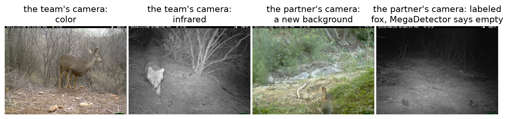
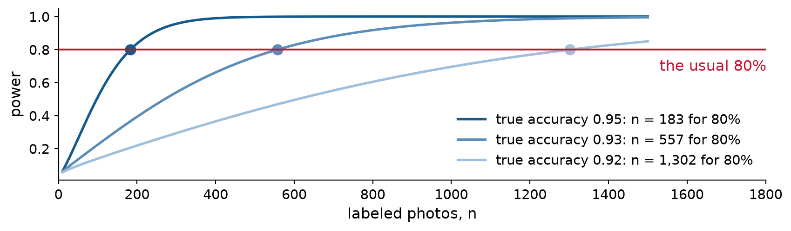
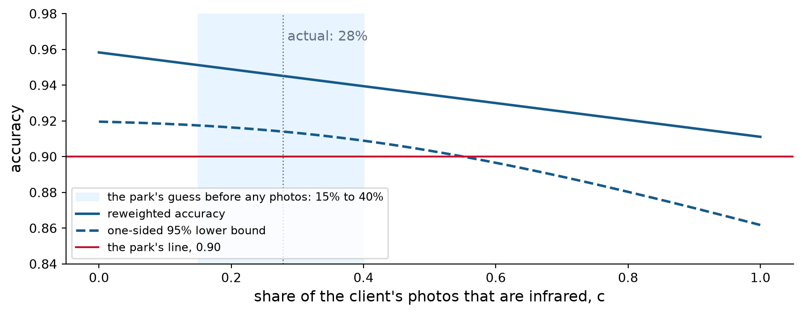
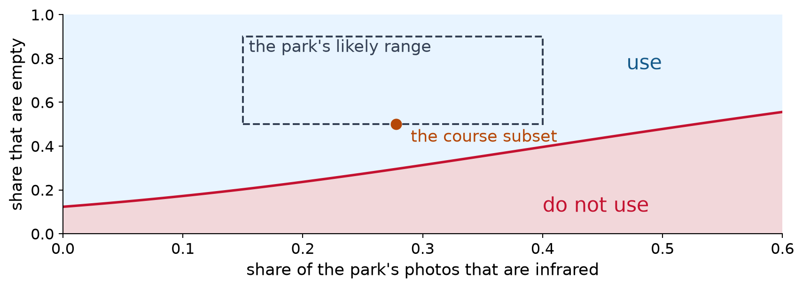

Would the decision survive another reasonable choice?
Shannon Gallagher
Last time

MegaDetector was right on 93.2% of photos from the team’s nine cameras. Reweighting to the partner park’s mix of color and infrared photos predicted 94.5%.
The park’s own labels showed 70.4%. Infrared missed what was new at the park’s cameras: backgrounds, and how bursts were labeled.
Lab 9 did the same for tissue slides from a new hospital.
Today’s plan
The park decides from the team’s analysis, and the team made choices along the way. Today we vary those choices and see whether the decision changes. That is a sensitivity analysis.
First we ask which variables could change the park’s decision, and how sure we are of the park’s mix.
Then we ask which choices in the analysis could change it, and why reporting only the best one overstates.
Then we take the model apart, by dropping a part or transforming its inputs. Machine learning calls these ablations and robustness tests.
Last, we write the result up for the park and turn to your project.
\text{use MegaDetector}\iff\text{lower bound on }\theta_{\text{partner}}\ge0.90
\hat\theta_{\text{partner}} estimates the partner park’s overall accuracy: the team’s accuracy on color and on infrared photos, reweighted to the partner’s mix of 72% color and 28% infrared.
The park set its rule before seeing results: use MegaDetector only if the one-sided 95% lower bound is at least 0.90. Below that, pass on it.
With bursts resampled, the lower bound is 0.904. The rule says use.
For today, set the park’s labels aside. Would the decision survive other reasonable choices in the analysis?
Two kinds of sensitivity analysis
Choices you could have made differently: the client’s mix, which Z, how many groups, the decision rule. Thinking and counting the client’s cases pin these down, with no labels. Today.
An assumption you cannot check without new data: that accuracy within each group carries over to the client. Only labels from the client settle it. Thursday.
Both ask the same question: does the decision change? Milestone 1, due today, asked what could most go wrong. This week turns that into a variable you can vary or bound.
Primary analysis: the choices you would defend if you could report only one, fixed in advance.
Alternatives: other choices you could also defend, each with a reason.
Flip rule: what result would change the decision, written down before you run anything.
A sensitivity analysis reruns the analysis under each alternative and reports every result.
A power curve is a sensitivity analysis

Suppose the park labels photos to test whether MegaDetector’s accuracy is above 0.90. The n it needs depends on a guess, the true accuracy, and a convention, 80% power.
At 80% power: about 180 photos if the truth is 0.95, 560 if 0.93, and 1,300 if 0.92.
One n hides that. The curve is a sensitivity analysis over the guess, and epidemiologists and trialists report it this way.
Question 1: which variables could change the decision?
q is the share of the partner’s photos MegaDetector calls animal: 27 of 54. With the team’s sensitivity 0.901 and specificity 0.963, \hat\pi=0.536. The truth is 0.50.
Epidemiologists call this the Rogan–Gladen estimator (1978). Machine learning calls it black-box shift estimation (Lipton et al. 2018).
It assumes the error rates carry over to the partner: the same kind of assumption as reweighting.
Varying a continuous choice: the client’s mix

The lower bound crosses 0.90 at c^\dagger\approx0.55, the flip point.
Anywhere in the park’s guessed range, the rule says use. The decision is not sensitive to the mix.
The client’s mix is an estimate too
\hat c=\frac{15}{54}=0.28
\text{Var}(\hat\theta)\approx(1-c)^2\,\text{Var}(\hat p_{\text{color}})+c^2\,\text{Var}(\hat p_{\text{ir}})+(p_{\text{ir}}-p_{\text{color}})^2\,\text{Var}(\hat c)
A client that counts its own unlabeled cases gives a mix with an interval: 0.18 to 0.41 counting photos, 0.12 to 0.51 counting bursts (5 of 18). Count clusters when cases come in clusters (Week 4).
The flip point, 0.55, is above even the burst interval, so the decision is still stable.
The mix’s share of the uncertainty is 0.047\times0.106\approx0.005, half a point. It is small here because accuracy differs little between the groups.
Two variables at once

Reweight over four cells: color or infrared, by animal or empty. Infrared animal photos are the weak cell (0.857).
The lower bound falls below 0.90 when fewer than about 30% to 40% of the park’s photos are empty.
Most camera-trap photos are empty, so the decision holds over the park’s likely range.
Check
A benchmark has easy cases, where a model is right 90% of the time, and hard ones, where it is right 60% of the time. A client’s share of hard cases, h, is somewhere between 20% and 40%. The client adopts the model only if its accuracy is at least 0.80.
Write the reweighted accuracy as a function of h, and find the flip point.
Is the decision sensitive to the client’s mix?
\theta(h)=0.90-0.30\,h, and 0.90-0.30\,h^\ast=0.80 gives h^\ast=1/3.
Yes. The flip point is inside the range: the model is adopted if h<1/3 and not if h>1/3. The client needs a better estimate of h, which needs no labels.
Question 2: which choices in the analysis could change it?
Three choices of Z under two decision rules
Z
Estimate
Lower bound
Point rule (estimate \ge 0.90)
Bound rule (bound \ge 0.90)
0. Infrared, from the pixels (primary)
0.945
0.904
use
use
1. The day_night column
0.933
0.892
use
do not use
2. No reweighting (the team’s accuracy)
0.932
0.889
use
do not use
Under the point rule, all three say use. Under the bound rule, only the primary analysis does.
The day_night column is wrong for 36 photos (Week 9), so alternative 1 shows what the metadata bug would have cost.
Reading a sensitivity table
\hat\theta^{(1)}-\hat\theta^{(0)}=0.933-0.945=-0.012\quad\text{on the same 162 photos}
Every row uses the same team photos, so the rows are paired. Their differences are much less noisy than the rows themselves (Week 5).
Each row answers the client’s question with a different defensible analysis. It is not a contest to win.
Sensitivity versus supplementary analyses
\underbrace{\text{same estimand, other assumptions}}_{\text{sensitivity analysis}}\qquad\underbrace{\text{a different estimand}}_{\text{supplementary analysis}}
Clinical trials have kept these apart since the ICH E9(R1) guideline (2019).
Same estimand: the partner’s accuracy, under another mix, another Z, or another decision rule.
Different estimand: color photos only, merged classes, or top-3 instead of top-1. Report it, and say it answers a different question.
The project’s sensitivity analysis is the first kind (Project Description, Section 3).
The multiverse
\underbrace{3}_{\text{defensible choices of }Z}\times\underbrace{2}_{\text{defensible decision rules}}=6\ \text{analyses}
Steegen et al. (2016) call the set of all defensible analyses a multiverse, and report all of it.
Define the set before the results. Show every member. Mark the primary analysis.
Do not sort or filter the members by result.
The park’s table is a small multiverse: six analyses, four say use.
Statisticians compare nested models: drop a term, refit, and compare, with a likelihood-ratio test or R’s drop1.
For prediction, leave-one-covariate-out (LOCO) measures how much worse the model predicts without variable j (Lei, G’Sell, Rinaldo, Tibshirani, and Wasserman 2018).
Both answer: how much does part j contribute to this model?
Machine learning calls it an ablation
\hat\theta_{\text{full}}-\hat\theta_{\text{without part }j}\quad\text{on the same test cases}
An ablation removes one part of a system, such as a feature, a layer, a source of training data, or a line of a prompt, and measures the drop.
It asks which parts of the model earn its accuracy, a question for the people building it.
Removing parts one at a time is a one-factor-at-a-time experiment. Two parts that do the same job each look useless alone; Week 11 designs evaluations like experiments.
An ablation is an estimate too
\widehat\Delta_j=\frac1n\sum_{i=1}^n\bigl(C_i^{\text{full}}-C_i^{(-j)}\bigr)\qquad\text{paired on the same cases (Week 5)}
Use the paired standard error, with the same clusters as the main analysis.
If training is random, the drop changes from seed to seed. Rerun over seeds and report the spread.
Ten ablations with only the biggest reported is the winner’s curse again.
A robustness test applies a transformation T to the test cases and measures accuracy again.
It answers: how does the model do on cases that look like T(X)?
That is a client’s question only if the client’s cases do look like T(X).
Synthetic shifts do not predict natural ones
\theta_{\text{ImageNetV2}}-\theta_{\text{ImageNet}}\approx-11\text{ to }-14\text{ points}
ImageNetV2 rebuilt ImageNet’s test set years later, following the original process as closely as it could. Accuracy still fell (Recht et al. 2019).
Models made robust to synthetic corruptions gained little on natural shifts like this one (Taori et al. 2020).
Lab 10’s Camelyon17 comes from WILDS, a benchmark of natural shifts, such as between hospitals (Koh et al. 2021).
When a robustness test is a sensitivity analysis
\theta_{\text{client}}\approx\theta_{T_s}\quad\text{only if the client's cases look like }T_s(X)
If you can say how the client’s cases differ, for example that sellers’ phone photos are blurrier, a transformation is a model of that difference.
Then vary its severity s and find where the decision flips: a tipping point in s.
Without that argument, it measures the model, not the client’s decision.
What each kind of analysis answers
What it varies
What it answers
Who asks
Ablation
a part of the model
which parts earn the accuracy
the people building it
Robustness test
the inputs, by a transformation
how the model does on transformed cases
anyone whose cases look transformed
Sensitivity analysis
choices and assumptions in the evaluation
whether the decision changes
the client
Your project’s sensitivity analysis is the last row (Project Description, Section 3).
Check
Is each an ablation, a robustness test, a sensitivity analysis, or none of these?
Remove the infrared flag from a model’s inputs and measure the drop.
Rotate every test photo 90 degrees and measure accuracy again.
Recompute the park’s lower bound with the day_night column as Z.
Try ten algorithms and report the best.
1 is an ablation. 2 is a robustness test, and a client question only if the park’s cameras are mounted sideways. 3 is a sensitivity analysis. 4 is none of these: it is model shopping.
Question 4: how do you report it?
Writing it up: the park’s version
MegaDetector clears the park’s line for any infrared share below 55%.
Methods, written before the analysis: “We vary the park’s infrared share from 15% to 40%. The recommendation changes if the lower bound falls below 0.90.”
Results: the mix curve, with the claim above as its title and the flip point marked.
Discussion: “The park’s own count puts its infrared share at 12% to 51%. The mix cannot change the recommendation. What could is how MegaDetector does at the park’s new cameras.”
Your sensitivity analysis is one variable that could make the AI system more or less accurate for your client than on the benchmark. Say why it could differ for your client, and which way it would push.
If you can measure it, vary your client’s mix of it (client_shares) over the range you can defend, and find the flip point. If you cannot, Thursday’s tipping point is the tool.
Write the flip rule first. The Project Description, Section 3, has the details.
What we did today
A decision depends on choices: a primary analysis, defensible alternatives, and a flip rule written first.
A variable moves the answer only if its mix differs between benchmark and client and accuracy differs across it.
For a measured variable, plot the estimate and its bound against the client’s mix and find the flip point. The mix is an estimate too.
A sensitivity analysis keeps the estimand. An analysis of a different estimand is supplementary.
Ablations and robustness tests ask about the model. A sensitivity analysis asks whether the client’s decision changes.
Report every row. Picking the best one is model shopping, and Week 5’s winner’s curse says it overstates.
Thursday and HW6
Thursday: the assumption no choice of Z can check, as a sensitivity parameter with a tipping point, and when to label. Then Lab 10 on hospital 5.
HW6 came out Sunday and is due Tue Mar 30. Problem 1 is a flip point in the client’s mix, Problem 2 a sensitivity table for hospital 4, and Problem 3 sensitivity analysis versus model shopping.